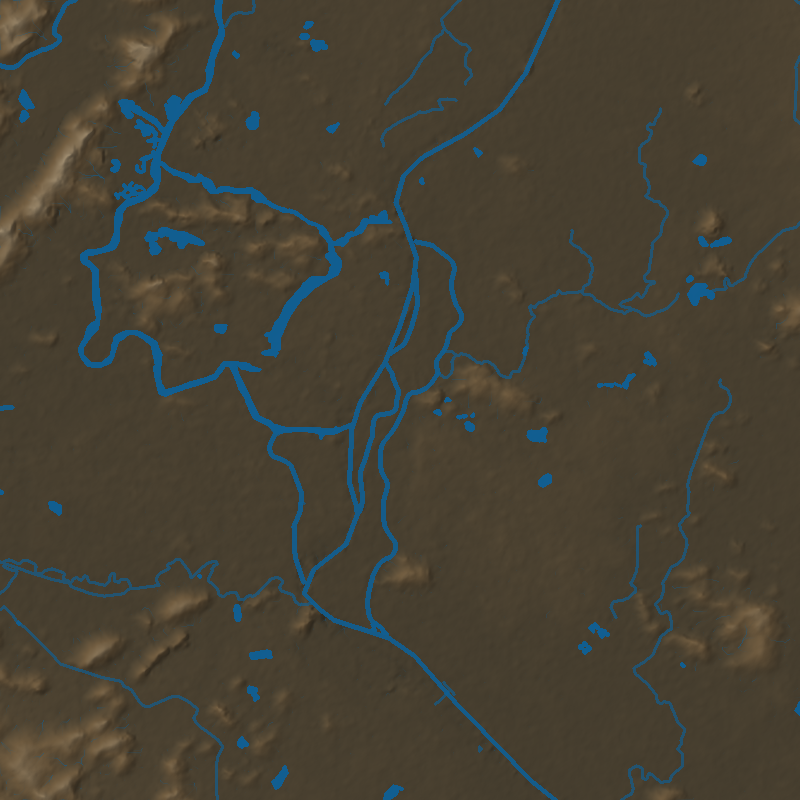

峰体保持厚实体量
允许圆钝、偏斜、凹口和鞍部。禁止针刺峰、统一圆锥和规则阵列。
GUILIN / YANGSHUO · DISTILLED KNOWLEDGE ATLAS · V1.0
18张参考照片中的峰体、谷底、河道、崖壁、峰脚与滩地关系，已经整理成可追溯、可执行、可回退的地貌生产知识。真实12.5米DEM与批准水系持续保持只读。

z_truth_m 只读参考图约束形态语法，不提供绝对高程、精确坐标或权威水位。
每一步保存来源、限制条件和回滚边界。
数量、尺寸、哈希、许可。
观察、用途、限制。
稳定空间关系。
原型、规则、节点。
同一真实DEM比较。
批准前增量为0。
允许圆钝、偏斜、凹口和鞍部。禁止针刺峰、统一圆锥和规则阵列。
程序细节不能整体抬高谷底，也不能切断峰间低地。
批准水系拥有优先权，河宽沿程变化。
大块岩面、竖向条带、台肩与裂隙组合，避免全坡重复。
局部沉积和低滩只进入可逆增量层。
需要专门证据掩膜，默认生成数量为0。
逐图观察和生产用途可以搜索、筛选。原图不在公开页面展示。
地貌身份由真实高程与批准水系决定，程序层负责可逆候选和表面响应。
圆钝、偏斜、凹口、鞍部与局部锐利并存。
多尺度、不等距、非周期。
宽阔、低起伏、持续连通。
顺低廊道推进，具有曲流和峡谷收缩段。
斑块、大块岩面、竖向条带、台肩与裂隙混合。
从平缓地面快速转入陡坡。
天然穿洞和拱门默认数量为0。
远、中、近景读取同一地貌身份。
terrain.truth_input真实高程只读
hydro.approved_input批准河流与水体
terrain.derivatives坡度、曲率、高差、TPI
hydro.channel_extract派生候选，authoritative=false
hydro.channel_snap约束到批准水系
valley_floor_preserve保护低廊道
karst.peak_field峰体与峰冠
karst.foot_transition峰脚与增量
karst.cliff_exposure崖壁与岩石
hydro.bar_candidate低滩与低岛
rock_normal世界坐标法线
rock_roughness湿润粗糙度
rock_parallax受限视差，默认0
z_truth_m12.5米DEM，只读，修改数为0。
z_base_resampled_m用于连续显示，来源为derived。
z_micro_delta_m峰脚、河岸和岩石细节，默认0。
z_visual_m视觉结果，不登记为测绘精度。
truthOverwritefalsesourceResamplingfalsesyntheticGapFillfalsemicroDeltaDefaultMeters0candidateVisualMaxMeters1.2visualAcceptancefalseproductionReadyfalse